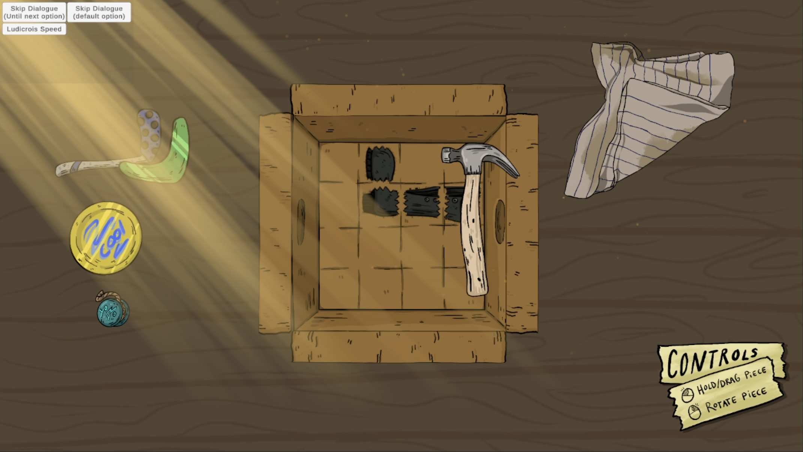
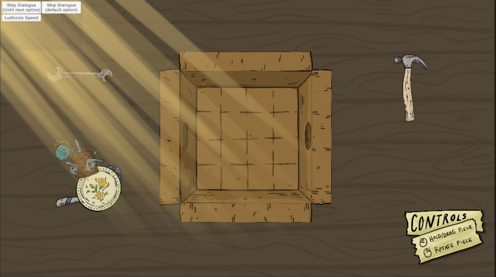
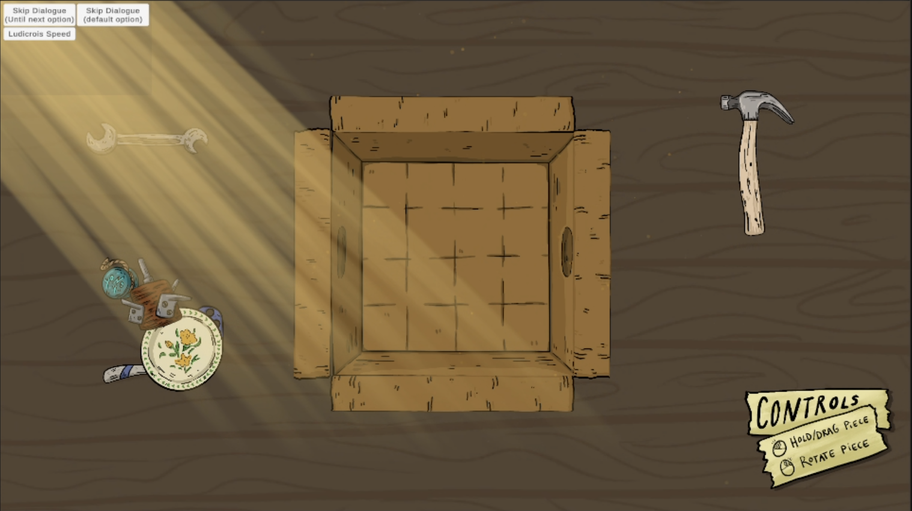
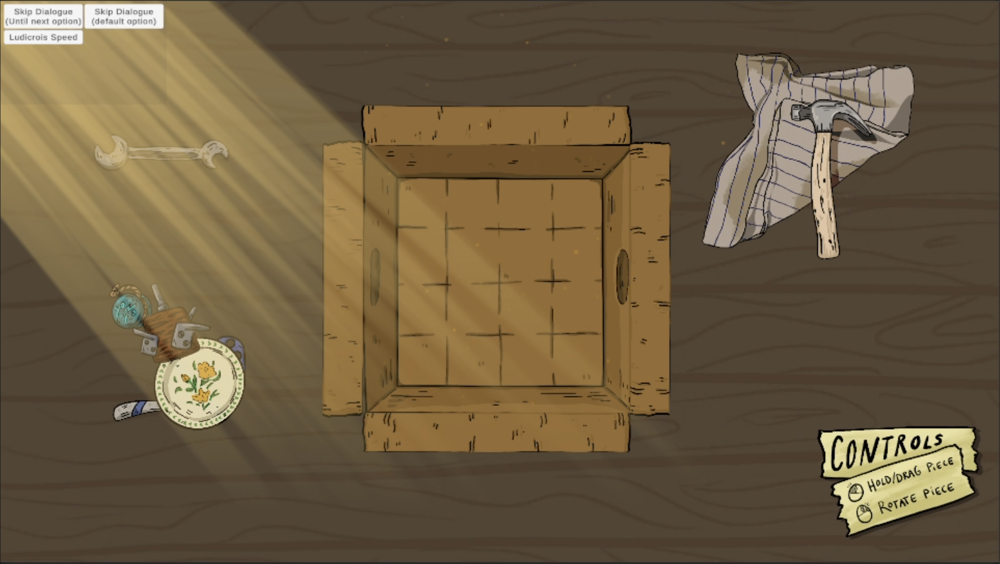
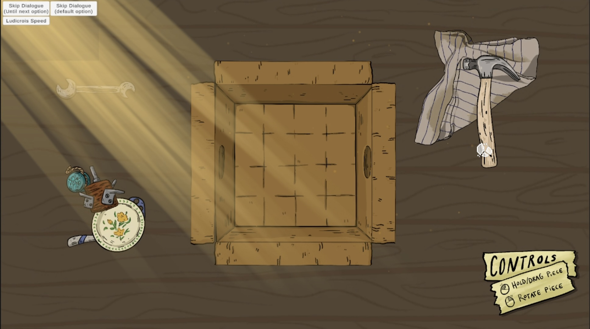
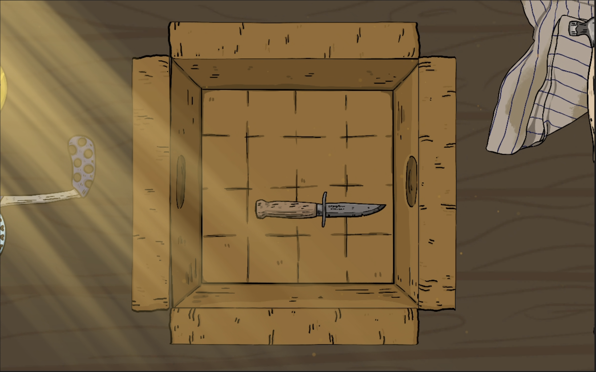
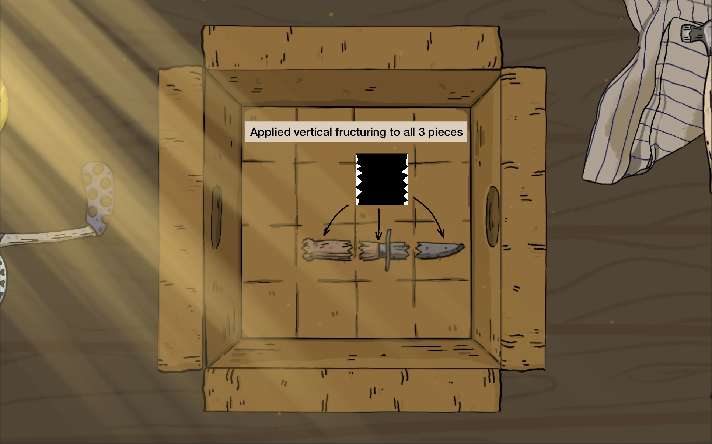

Fracturing system
Credits
The work described was completed during my internship as a Game Developer Intern at Betula Games, under the supervision of Troels Zefugi and Linnea Sebastian, during the work on a game Dødsbo
Overview
Dødsbo is a narrative-driven, emotional game about meeting up with your dysfunctional siblings to clear out your deceased dad's estate. One of the Dødsbo game experiences is a minigame where the player arranges found objects inside a box, making the belongings perfectly fit together. My contribution to this minigame was implementing object fracturing mechanics to ease the packing process for the times when a player gets stuck. The purpose of this mechanic is to help the game maintain a cozy stressless vibe without putting a pressure on getting the puzzle correct in its original form.

Goals
Intuitive fracturing:Help players understand how to fracture objects.
Complete the scene with 2D assets for fracturing: Create assets that match the artist's established style, using references.
Optimize performance: Processing and modifying every pixel in arrays can be costly. I restructured the code to make it four times faster than the original solution.
Game Design
How should the fracturing of the pieces be initiated? Should it be encouraged?
I tried designs where fracturing was triggered by the number of rotations or object placements, but they didn't fit the cozy, relaxed feel the game should create. During testing, I suggested using a hammer that players could pick up and use to break objects. This makes fracturing voluntary—not a punishment, but a helper tool—and also makes the puzzle a bit more fun. Players are encouraged to solve the puzzle because a correct solution takes less time. Fracturing guarantees success, but takes longer because each piece has to be dragged and dropped individually.
How can the hammer be distinguished from the pieces the player needs to pack?
Although the hammer is a tool, some of the existing sprites the player packs are also tools. I made the hammer distinct without using text (one of my supervisor's requirements) in a few ways: the cursor changes from a hand to a broken dish when hovering over the hammer, picking it up, or breaking objects. I also made it larger than the other pieces and placed it to the right of the box. I added a cleaning rag to make it look more like a tool.




Game Development
Texture2D Pixel Processing and Transformation
To adjust sprite textures when creating fractures—for example, by applying fractured-edge masks, adding black outlines, and rotating textures—I first had to convert them into pixel arrays and then modify the arrays. I did this by going through the arrays in nested for loops (for width and height) and comparing and applying changes to each pixel based on its position.
Using Coroutines to Reduce Frame Freezes During Texture Processing
Working at a real game development company was beneficial because it gave me the opportunity to optimize my code, which I wouldn't have done otherwise. I learned to use the Profiler, which shows how long each frame takes to process. Since I created sprites procedurally and made many texture modifications, processing a 4-cell piece took up to 60 ms, while the company's limit was 16 ms. I restructured my code by (1) passing in pixel arrays instead of textures and overwriting the original array instead of a copy, and (2) adding coroutines to divide texture operations across multiple frames. I also learned to create callbacks for coroutines.
Algorithm for Selecting Pixels to Fracture
By looking at the pieces and imagining how they should be fractured, I realized they could be divided into a maximum of 2 x 3 (or 3 x 2) cells. Each cell needed different fractured edges: edges next to other cells had to remain untouched, while exposed edges could be fractured. To handle corners, I hand-drew fracture masks for different edge and corner configurations. For each cell, I checked its position against the positions of the other cells to determine whether it formed a corner. I then selected and rotated the appropriate mask, resized it to fit the cell, and applied it to the pixel array. The mask made selected pixels transparent, creating a pointed fracture.


Challenges and Learning Outcomes
Optimizing texture processing
Working at a game development company gave me the chance to optimize my code—something I might not have done otherwise. In my own projects, I focus less on optimization because they are smaller. In a full-scale game, more things happen at once, so performance becomes an important part of development.
I learned to use the Profiler to measure how long each frame takes to process. Creating sprites procedurally involved many texture modifications, and processing a 4-cell piece took up to 60 ms, while the company's limit was 16 ms. I restructured the code to pass pixel arrays instead of textures and overwrite the original array rather than create a copy. I also used coroutines to spread texture operations across multiple frames and learned to create callbacks for them.